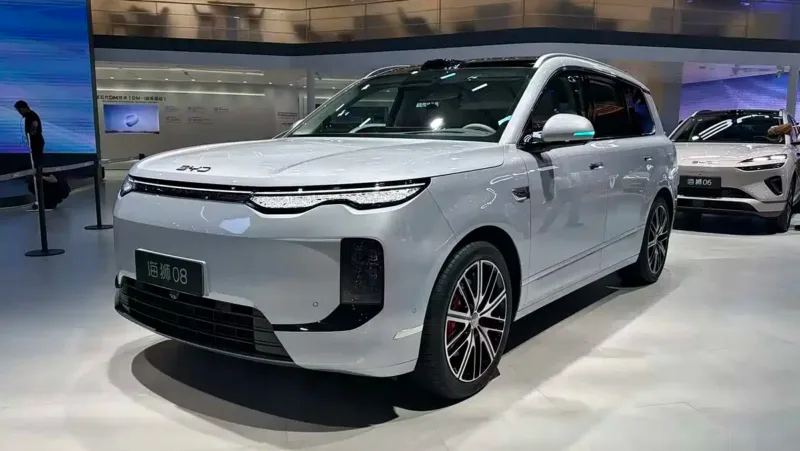
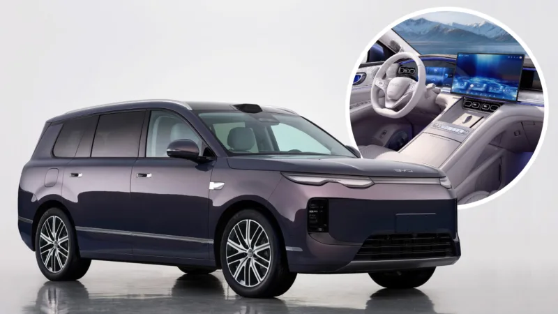

▲ 중국 브랜드 전기차(참고 이미지). 미국 완성차 업계는 중국산 커넥티드 차량의 영구 금지를 요청했다 ⓒ carnewschina.com
미국 자동차혁신연합(Alliance for Automotive Innovation)이 의회 지도부에 중국산 커넥티드 차량의 판매·수입·제조를 영구 금지해달라고 요청했다. 이 단체에는 GM과 포드는 물론 BMW, 메르세데스-벤츠, 혼다, 토요타 등 다수의 완성차 업체가 참여하고 있다.
1. 완성차만의 문제가 아니다

▲ 중국 브랜드 전기 SUV(참고 이미지). 금지 요청 범위에는 소프트웨어와 하드웨어도 포함된다 ⓒ carnewschina.com
이번 요청에서 눈여겨볼 부분은 범위다. 중국에서 만든 완성차만이 아니라 차량에 들어가는 연결된 소프트웨어와 하드웨어까지 대상에 포함된다. 커넥티드카가 통신 모듈과 소프트웨어로 외부와 연결되는 구조인 만큼, 부품 단위까지 규제해야 실효성이 있다는 논리다.
여기에 더해 중국 자본을 15% 이상 보유한 제조사의 판매를 금지하는 방안도 논의되고 있다. 이 기준을 그대로 적용하면 중국 자본이 들어가 있는 메르세데스-벤츠까지 걸린다. 요청을 한 단체에 벤츠가 참여하고 있다는 점을 감안하면 다소 역설적인 상황이다.
2. 내세운 근거 — 데이터와 감시
연합이 제시한 이유는 지적재산권 도용, 불공정 거래, 정부 보조금, 그리고 감시 우려다. 특히 중국산 차량이 민감한 차량·소비자 데이터를 수집해 중국 당국에 전송할 수 있다는 점을 문제로 지목했다. 커넥티드카가 위치·주행 패턴·음성 등 광범위한 데이터를 다루는 만큼 안보 사안이라는 주장이다.
3. 반론 — 보호주의라는 지적

▲ 중국 브랜드 전기차 실내(참고 이미지). 데이터 수집은 중국차만의 문제가 아니라는 반론도 나온다 ⓒ carnewschina.com
반대편에서는 미국 제조사 역시 방대한 차량 데이터를 수집하고 활용하고 있다는 점을 든다. 데이터 수집 자체가 문제라면 국적을 가릴 이유가 없고, 결국 기존 자동차 산업을 보호하려는 조치에 가깝다는 지적이다. 실제로 미국 내 중국산 차량 판매는 아직 본격화되지 않은 상태다.
4. 국내에는 어떤 의미인가

▲ 중국 브랜드 전기차 실내(참고 이미지). 국내에서도 커넥티드카 데이터 규정 논의가 이어지고 있다 ⓒ carnewschina.com
국내는 상황이 다르다. BYD가 이미 승용 브랜드로 진출해 판매를 늘리고 있고, 수입 전기차 시장에서 존재감을 키우는 중이다. 미국식 전면 금지가 그대로 적용될 가능성은 낮지만, 커넥티드카 데이터의 국외 이전과 보관 규정이 어떻게 정리되는지는 국내에서도 같은 방식으로 제기될 수 있는 쟁점이다.
5. 정리
체크포인트
- 요청 범위는 완성차를 넘어 소프트웨어·하드웨어까지 포함된다.
- 중국 자본 15% 기준을 적용하면 벤츠 같은 유럽 브랜드도 걸린다.
- 근거는 데이터 보안과 감시 우려지만, 보호주의라는 반론도 만만치 않다.
- 관련 법안(S. 4429)이 연말 전 처리될 것으로 예상된다.